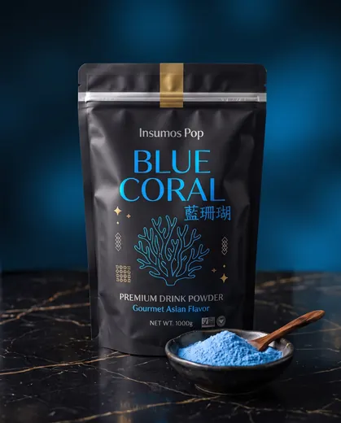

Para bares y coctelería
Siropes para bares, coctelerías y bebidas sin alcohol
Doce sabores concentrados en botella de 1,9 L. Con una dosis de 20 ml, el costo del sirope es de aproximadamente $1.158 por bebida y la botella alcanza para 95 preparaciones.
Pide tu muestra gratis para negocios por WhatsApp y prueba antes de tu primer pedido.
Por qué funciona en tu negocio
Lo que ganas con Insumos Pop
Costo por copa que puedes calcular
Botella de 1.9 L a $110.000: ≈$58 por ml. Tú decides el chorro y sabes tu costo exacto antes de armar el cóctel (la operación completa está abajo).
Una referencia para varias secciones de la carta
El mismo sabor puede usarse en cócteles, mocktails, sodas y limonadas. La dosis y la receta las controla tu barra.
12 sabores para toda la carta
De lychee y maracuyá a manzana verde y toronja. Cotiza los sabores que necesitas con factura y ficha técnica.
Hagamos la cuenta juntos
La derivación, para que la compruebes: botella de 1.9 L = 1.900 ml por $110.000 (IVA incluido) → $110.000 ÷ 1.900 ≈ $57,9 por ml. Un chorro de 20 ml × $57,9 ≈ $1.158, y 1.900 ÷ 20 = 95 copas. Con 15 ml: ≈$870 por copa y ~126 copas.
Es el costo del sirope, no del cóctel completo (licor, hielo, garnish y vaso van aparte). La dosis exacta la defines tú; por eso te damos muestra gratis antes de comprar.
La forma más rápida de empezar
Kit para Barra

Tres concentrados a elección para la carta de cócteles más el color insignia para el trago visual de la casa.
- 3 × Siropes de Fruta · 1.9 L — sabores a elección
- Coral Azul · 1 kg
$425.000 IVA incluido
Es la suma exacta de los precios del catálogo: lo que agregamos es la selección ya pensada y la asesoría para montarla.
Así se ve en tu carta
Ideas de menú
Recetas paso a paso
¿Primera vez con estos insumos? Aprende el paso a paso en la guía para emprender.
Selección para ti
Productos recomendados
Dudas de tu sector
Preguntas frecuentes
¿Cuántos cócteles salen de una botella?
Depende de la dosis. Con 20 ml por copa, una botella de 1,9 L rinde 95 preparaciones (1.900 ÷ 20); con 15 ml, unas 126. Prueba la receta y define el estándar de tu barra antes de calcular el rendimiento.
¿Sirven para mocktails y menú sin alcohol?
Sí. Funcionan igual en soda italiana, limonada y té frío: la misma botella te cubre la carta con y sin alcohol.
¿Tienen factura y ficha técnica para mi control de proveedores?
Facturamos como Taro Pop S.A.S. y al cotizar te entregamos la ficha técnica de cada sirope para tu control de insumos.
¿Tu negocio es otro? Mira: Tiendas de bubble tea · Cafeterías · Emprendedores.
Haz la cuenta en tu barra
Pide tu muestra, define tu chorro estándar y calcula tu costo por copa con datos reales.
Cotizar para mi barra